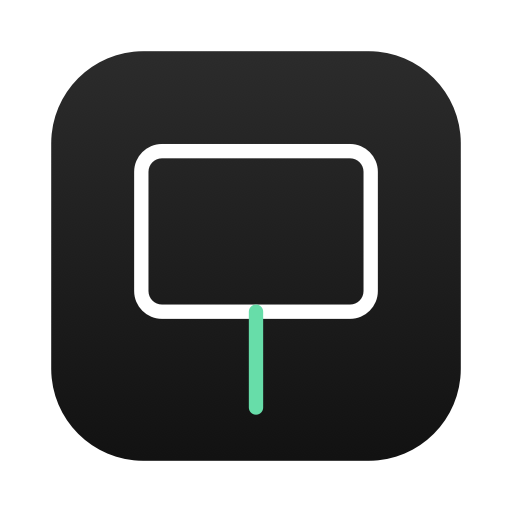

Tether
Broken screen?
Plug in your iPad.
Tether makes your iPad the Mac's screen as soon as the cable goes in. Close the lid and keep working.
Download for MacSee how it works ›
The Mac's screen is broken
How it works
The cable is
the switch.
Nothing to open, no Control Center, no clicking around on a screen you can't see.
Plug it in
Tether watches USB. When an iPad shows up, it starts. When it leaves, it stops.
Sidecar connects
It turns on Apple's own Sidecar for you. If the iPad is locked, it keeps trying until you unlock it.
The menu bar moves
The iPad becomes the main display, so the Dock and new windows open there, not on the broken screen.
Without the cable
No cable?
Sill takes over.
On the couch or across town, Tether hands the screen to Sill, a free, open-source app that streams your Mac to the iPad. Plug the cable back in and Sidecar takes over again.
Your trackpad works
Sill passes the Magic Keyboard's trackpad, keys and Pencil through to the Mac. Sidecar only passes the keys.
A screen that fits
Tether makes an iPad-sized Retina screen, so the Mac has a proper desktop to stream with the lid shut and the real one broken.
From anywhere
With Tailscale, reach the Mac you left at home. Tether keeps it awake while it's on a charger, and only then.
Lid closed, bag safe
Close the lid.
Put it in a bag.
A Mac sleeps when you close the lid unless a monitor is plugged in, and an iPad doesn't count. Tether keeps it awake only while you're using it. Everything else lets it sleep, even with the cable still in, so it won't cook in your bag. It also never switches off Amphetamine's keep-awake.
The menu
One menu.
That's the app.
No window, no Dock icon, no settings screen. Everything starts switched on, and it opens at login. Untick what you don't want. Try it.
Open source
Small enough
to read over coffee.
Seven Swift files, about 900 lines, MIT license. No account, no network, no analytics.
Nothing leaves your Mac
Tether makes no network requests. It talks to USB, Sidecar and the display settings, and that's all.
One password, once
Keeping a Mac awake with the lid shut needs admin rights. You type your password once, and it allows one command: pmset -a disablesleep 0|1.
Gone in one line
Delete the app and the rule, and your Mac is exactly as it was. The command is in the README.
# build it yourself
git clone https://github.com/rzrizaldy/tether.git
cd tether && ./scripts/build.sh --install
Plug in.
Free, open source, and it works on its own once it's set up.
Download for MacView on GitHub
Tether.zip · macOS 13+ · Apple silicon and Intel · All versions · SHA-256
-
1
Unzip and move
Drag Tether into Applications.
-
2
Allow it once
It isn't notarized, so macOS stops the first open. Go to System Settings › Privacy & Security and click Open Anyway.
-
3
Turn on lid closed
Click the iPad in the menu bar, then Work with lid closed… and type your password. Do this once, while you can still see a screen.
Needs an iPad that supports Sidecar, signed in to the same Apple ID as the Mac. With the lid shut, type on a keyboard attached to the iPad and point with touch, Pencil or a mouse. Sidecar doesn't pass the iPad's trackpad through. For no cable, add Sill on both and turn on Remote and wireless with Sill.